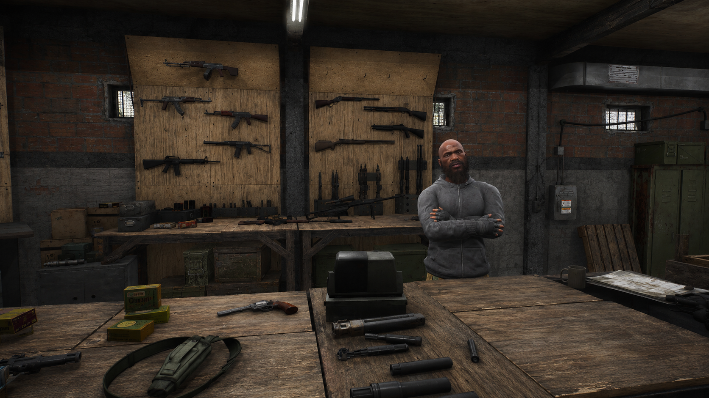
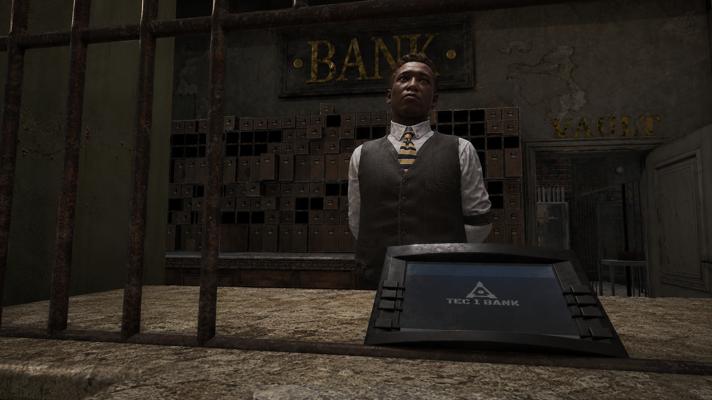
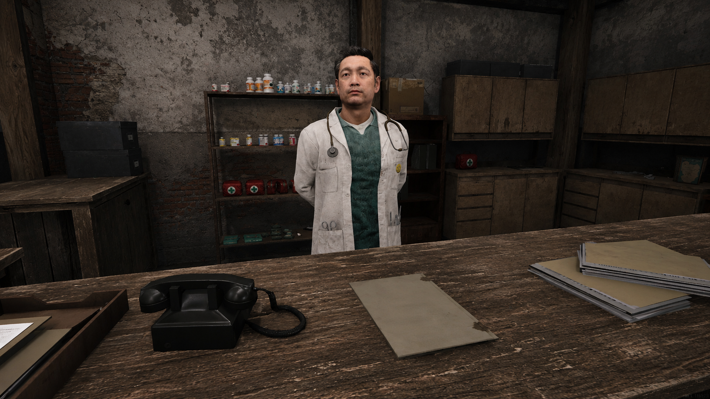
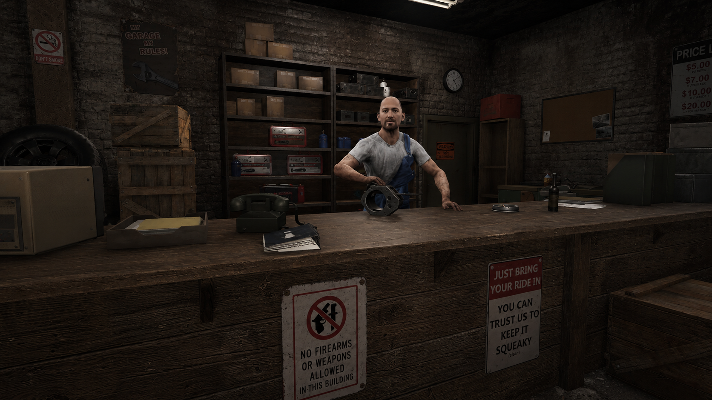
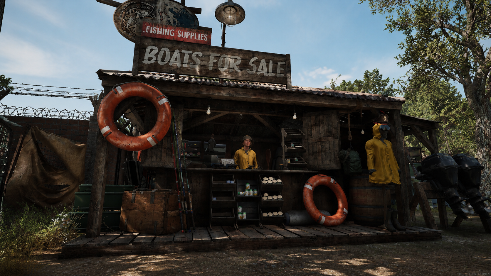
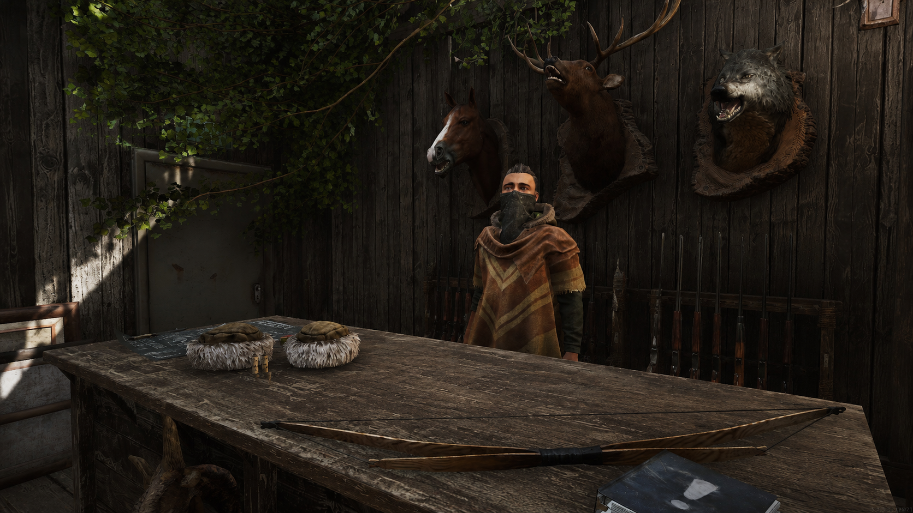
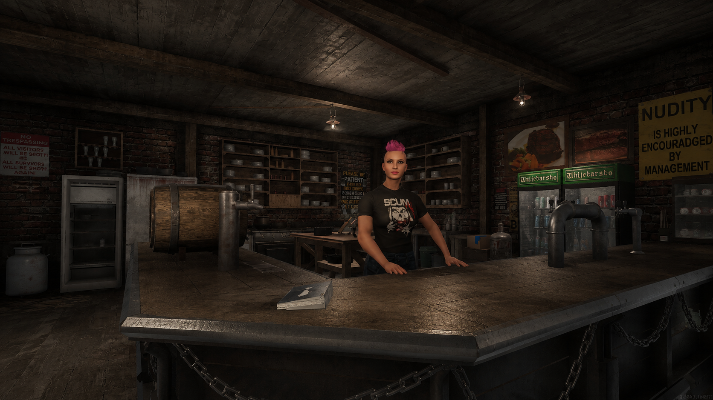

Traders

Commercer dans un monde brisé
Dans un monde où les ressources sont rares, les traders occupent une place importante dans la vie des survivants.
Ils ne sont pas là pour enrichir la population ni pour distribuer des cadeaux. Leur objectif est simple : faire des affaires.
Nourriture, équipement, armes, véhicules, soins médicaux ou services financiers, presque tout peut être trouvé quelque part chez eux... à condition d'avoir les moyens de payer.
Sur Arvelys RP, les prix plus élevés font partie des réglages serveur. Ce choix renforce la cohérence du lore et donne davantage de valeur à chaque objet, chaque munition et chaque litre de carburant.
Acheter devient une décision. Vendre devient une opportunité. Dépenser sans réfléchir peut rapidement devenir une erreur.
Les traders peuvent offrir une solution rapide à certains problèmes, mais ils ne remplacent ni l'exploration, ni les échanges entre joueurs, ni les risques pris sur le terrain.
« Si vous cherchez la générosité, vous vous êtes trompé d'endroit. »
Les commerçants d'Arvelys

Magasin général
Le Magasin Général est souvent le premier arrêt des survivants. On y trouve les ressources courantes, les besoins de base, quelques outils, de quoi repartir sur la route et parfois une trouvaille qui tombe au bon moment.
Rien n'y est vraiment donné, mais dans un monde où chaque objet compte, un simple comptoir peut vite devenir indispensable.

Armurier
L'Armurier propose armes, munitions et équipements sensibles. Ici, chaque achat peut changer l'issue d'une rencontre, mais chaque balle a un prix.
Dans les terres sauvages comme près des ZDND, mieux vaut être préparé avant que la situation ne dégénère.

Banque
Malgré l'effondrement du monde, certaines institutions continuent de fonctionner. La Banque permet de gérer son argent, de sécuriser ses économies et de garder une trace des transactions.
Les gouvernements ont disparu, mais certains comptent encore chaque billet.

Médecin
Blessures, infections, fatigue ou simple besoin de matériel médical : le Médecin reste souvent le dernier recours quand le terrain laisse des traces.
Ses services coûtent cher, mais l'alternative est parfois bien pire.

Mécanicien
Les routes d'Arvelys sont longues, abîmées et rarement sûres. Le Mécanicien assure l'entretien, les réparations et la vente de certaines pièces indispensables.
Dans un monde où l'essence est rare et chère, posséder un véhicule est déjà un luxe. Le garder en état en est un autre.

Pêcheur
Installé près des embarcations, le Pêcheur fournit matériel de pêche, appâts et équipements nautiques.
Pour ceux qui savent être patients, la mer et les rivières restent une source précieuse de nourriture, de commerce et parfois d'évasion.

Chasseur
Le Chasseur connaît les forêts, les pistes et les dangers qui rôdent loin des routes. Arcs, matériel de traque, peaux et ressources issues de la chasse passent régulièrement par son comptoir.
Depuis que les humains se font plus rares, la nature a repris ses droits. Elle nourrit encore ceux qui savent la respecter.

Saloon
Le Saloon est l'un des rares endroits où l'on peut encore souffler, boire un verre, manger quelque chose et écouter les rumeurs qui circulent.
À Arvelys, les meilleures informations ne se trouvent pas toujours dans les bunkers. Parfois, elles s'achètent autour d'un comptoir.